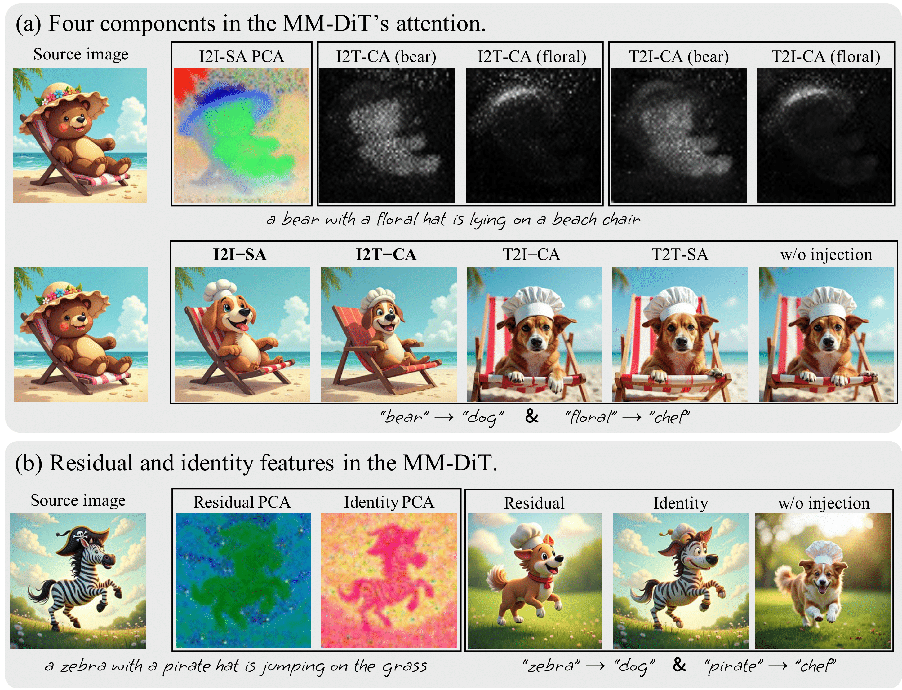
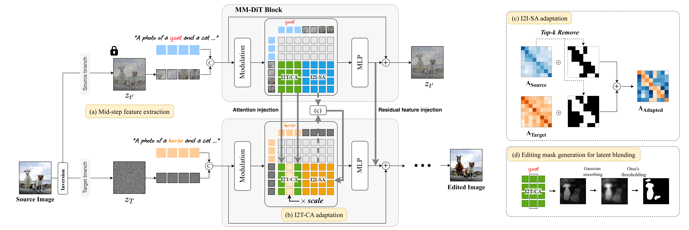
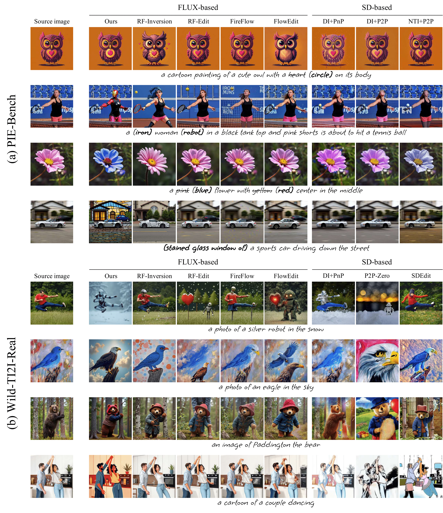
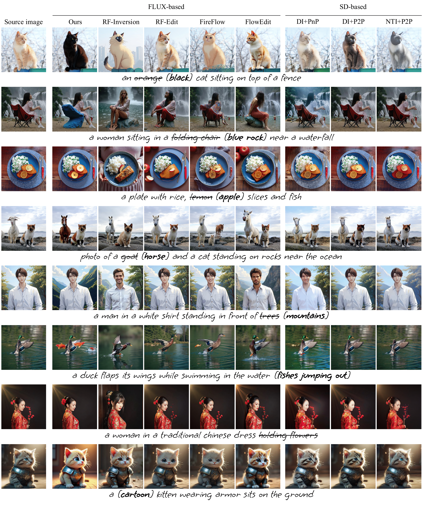
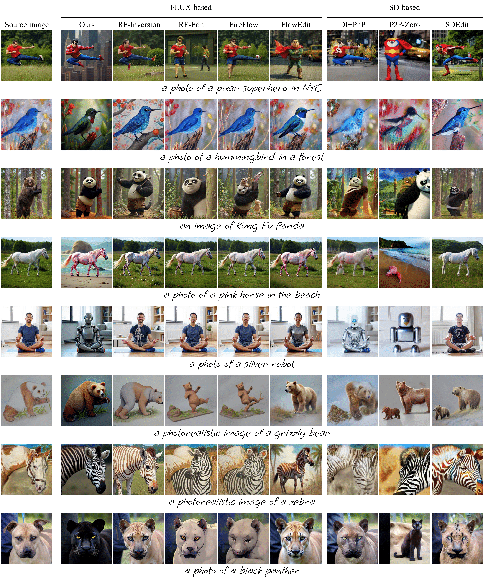
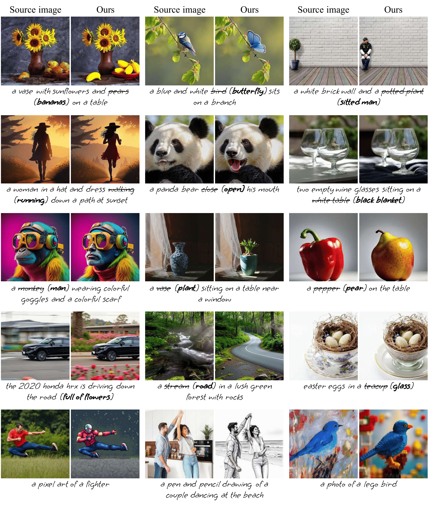
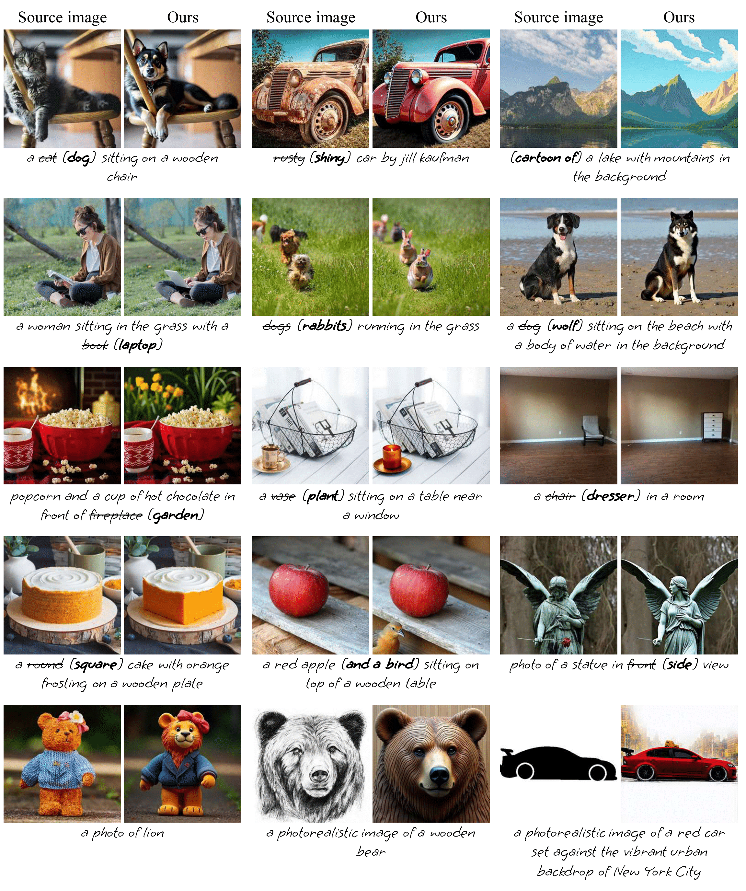

Rectified Flow text-to-image models surpass diffusion models in image quality and text alignment, but adapting ReFlow for real-image editing remains challenging. We propose a new real-image editing method for ReFlow by analyzing the intermediate representations of multimodal transformer blocks and identifying three key features. To extract these features from real images with sufficient structural preservation, we leverage mid-step latent, which is inverted only up to the mid-step. We then adapt attention during injection to improve editability and enhance alignment to the target text. Our method is training-free, requires no user-provided mask, and can be applied even without a source prompt. Extensive experiments on two benchmarks with nine baselines demonstrate its superior performance over prior methods, further validated by human evaluations confirming a strong user preference for our approach.

Analysis on MM-DiT block:
(a) Upper row: The PCA result of I2I-SA and the attention maps of I2T-CA and T2I-CA for two words.
I2I-SA encodes structural information, while I2T-CA and T2I-CA capture text-image relationships.
Lower row: Edited results generated by injecting features, indicated above each image.
(b) PCA results of residual and identity features, along with edited results generated by injecting these features from MM-DiT blocks.

Overview of our method, ReFlex:
(a) We extract three key features---I2T-CA, I2I-SA, and the residual feature---from a mid-step latent,
while the fully inverted latent serves as initial noise for target image generation.
To enhance text alignment, we propose two adaptation methods, respectively for two attention maps,
(b) I2T-CA and (c) I2I-SA, whereas residual feature is injected without modification.
(d) For local editing, we generate an editing mask from the source I2T-CA.
This injection process is applied only during the early timesteps of target image generation.




